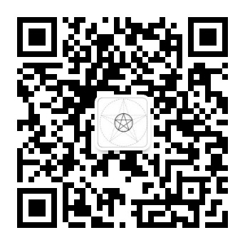

在分诊结果的「判据链」表里，每条判据右侧都有「纠错」按钮。纠错用于判据权重回标——这是本工具最重要的自我修正通道。
三条通道合起来 = 本工具的自我修正闭环。判据权重回标是最关键一环（自反刀1遗留项）。
📤 打包/离线也能反馈：点「一键复制反馈码」，把生成的码留言给作者（公众号「茶余饭后念碎碎」），无需联网即可送达。
按下面的清单走一遍，遇到卡住/不顺手的地方记下来。你的反馈直接进下一版改进清单。
判据不对、案例不准、功能缺失、体验卡顿……都写这里，进入下一版改进清单。
每条案例给出：当时解法 + 🎯对应判据 + 🔗关键节点；可按类型筛选浏览。
数据来源：库内矛调案例库，公开报道整理，仅作教学参考。
调解前先选场景，看该类的"先问一句"与两条路径；主页面只做分诊，深水判据在此查阅。
② 双链隐分析页有按钮「⤵ 从主页面分诊带入」：点击会自动读取 ①分诊最近建档案件（当事人A/B、场景、简述），填入双链表单并直接生成分析卡——无需重复录入，双链与主页面打通。
要自建（非带入）时，直接在⑤页手填当事方/利益链/权力链/四态即可。
本版为 v4.0。功能构成：① 分诊（判据链+反事实推演）；② 双链隐分析（利益链×权力链×四态矩阵，可从分诊带入）；③ 案件工作台；④ 案例库（54例，含关键节点与对应判据）；⑤ 反馈仪表与样本（C/A）；⑥ 设置/说明（含场景深水判据手册、版本与权属）。数据仅存本机 localStorage；判据权重仍为工程近似，实证回标待样本≥N 后进行（自反刀1的预期遗留）。
| 名称 | |
|---|---|
| 版本 | |
| 本次更新 | |
| 作者 | |
| 著作权 | |
| 使用许可 | |
| 联系方式 | |
| 扫码联系 |  扫码关注公众号 → 留言「授权 + 机器码」/ 反馈问题 |
免责声明：本工具为调解辅助，输出仅为参考意见，不构成法律意见或处理决定。正式处置请依现行法律法规及本单位程序，并核实后使用。因使用本工具产生的后果，作者不承担法律责任。
数据说明：全部数据仅存于本机浏览器（localStorage），不上传、不联网、不采集。清除浏览器数据将同时清除记录，请定期用「导出JSON」备份。
第三方内容：内置案例为公开报道整理，仅作教学参考；如涉权利问题请联系作者删除。
appData{settings, cases[], entries[], samples[]}；cases: id/type/pa/pb/sexp/date/q..{risk,window,state}/stat/timeline[]{t,act,who}/follow[] /report。 entries: caseId/est/actual/recid/note。 samples: caseId/estR/estA/corrR/corrA/reason。